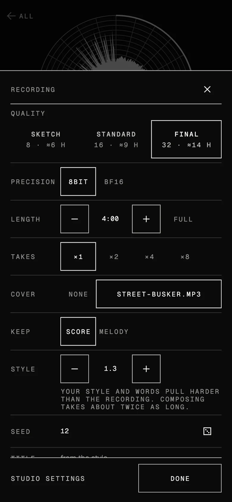
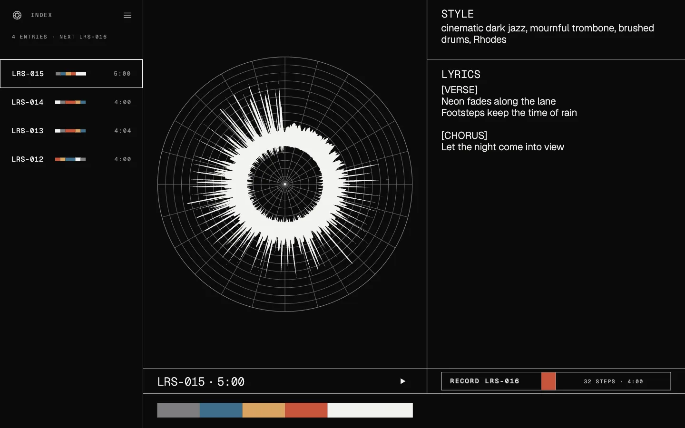
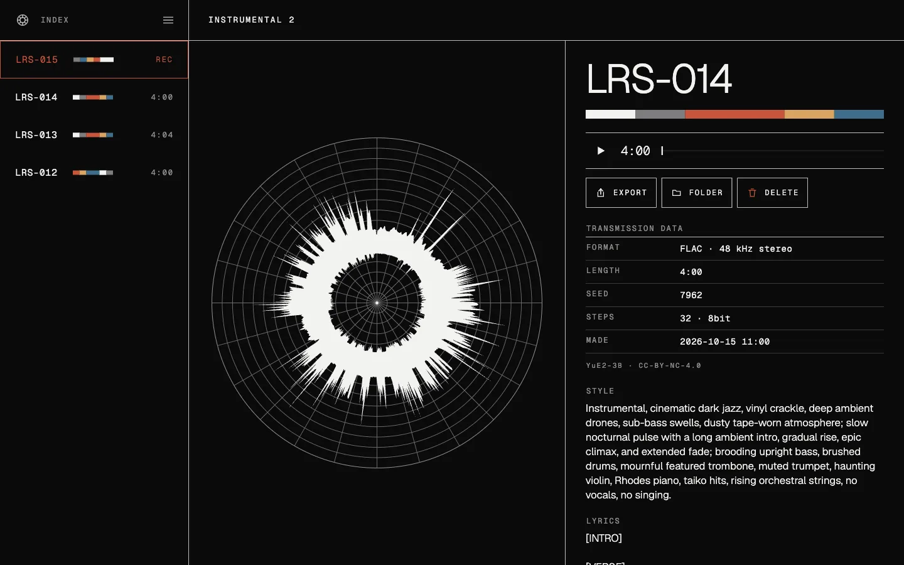
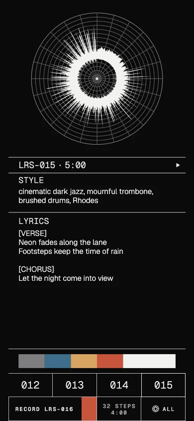
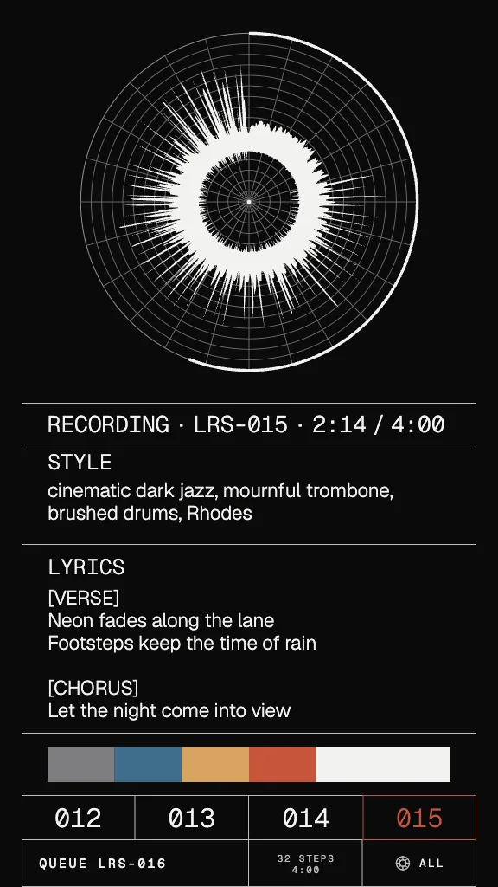
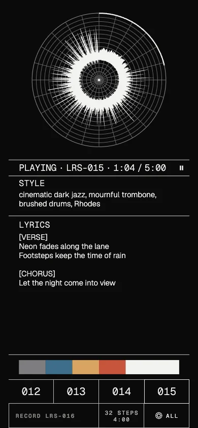
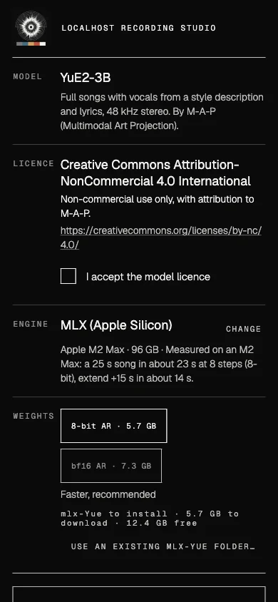

LRS-001 · A short film about silence
- The zombie apocalypse started on a Tuesday.
- You're alone in a forest, running. The zombies took out the cell towers on day one.
- This should feel like a movie. It doesn't, and it takes you a minute to work out why.
- There's no soundtrack. Just your breathing.
- So you pull out your phone, open the studio and make one.
- Run, run, run.
Localhost Recording Studio
Write a style and some lyrics. It makes the whole song on your own phone or computer, offline. Give it a recording and it sings a cover of the tune with your words.
LRS-000 · Side A
The ad
LRS-000 · Ad in production
Read the voiceover
LRS-RUN · Side B
"Run, run, run"
The soundtrack from the forest. The app made it, start to finish.
The song is still being rendered. It will appear here when media/run-song.mp3 exists.
Liner notes
How it works
- 01 · Write
A style ("breathless synth chase, 140 bpm, panic") and lyrics with section tags like
[Verse]and[Chorus]. For a cover, also pick a recording. - 02 · Record
Pick SKETCH, STANDARD or FINAL. Each shows an estimate of how long it will take. Press record, queue a few variants if you like and put the phone back in your pocket.
- 03 · Render
The model runs on your phone or computer. Nothing is uploaded and you don't need an account. At standard and final quality, a preview plays a quarter of the way through, so you can decide whether to let it finish.
- 04 · Extend
Pick any section of a song you like and continue it from there. Extends can be chained. "Refine this mix" brings a sketch up to full quality and keeps its sound.
Engine, picked by hardware
| Hardware | Engine |
|---|---|
| Apple Silicon Mac | MLX (mlx-Yue) |
| Linux PC | yue2.cpp on CUDA, Vulkan or CPU |
| Android phone | yue2.cpp, on the device |
How long it takes
| 25 s song | about 23 s on a Mac M2 Max (MLX, 8-bit, 8 steps) |
|---|---|
| Extend +15 s | about 14 s, same Mac |
| On a phone | minutes for every 10 s of song. Slow, but it works. Let it run in the background. |
These are the numbers we have measured. First run downloads the model: about 3.5 GB on Android, about 10.5 GB on a Mac. Covers have their own numbers, below.
Cover versions
Covers
Give it a recording. It sings the tune again in your style, with your words.
Pick a recording in the Cover row of the recording settings. The studio listens to it first and writes down its score: melody and chords (SCORE), or the melody alone (MELODY). Then it makes a new song from that score, in your style and with your lyrics. The cover keeps the tune. The original instruments and voice don't carry over.
The Style row sets how hard your style and words pull against the recording's tune, from 0.5 to 2.0. At 1.0, the default, both count evenly. Go higher for a stronger genre and clearer words, and the tune can drift further from the original. Go lower to stay closer to the recording. Any value other than 1.0 makes composing take about twice as long, and the time estimate includes that.
Cover the same recording twice and the app remembers the score it wrote down, keyed by the file itself: the second cover skips the listening and goes straight to the song.
| Runs on | Mac and Android, entirely on the device |
|---|---|
| Extra download | about 2.6 GB on a Mac, about 960 MB on a phone |
| 30 s cover | about a minute on a Mac, sketch quality |
| 20 s cover | about 20 minutes on a Pixel-class phone, sketch quality |

Plates
What it looks like






Small print, large enough to read
Models and licences
The app
MIT
Free software. Fork it if you want to.
The model · YuE2-3B by M-A-P
CC BY-NC 4.0
The first supported model is non-commercial, with attribution to M-A-P. The app works with other models too, and each one brings its own licence. You see it and accept it before anything downloads, and every song remembers which model and licence made it.
Pressings
Get it
-
Android
Signed APK. arm64, Android 14 or newer.
Latest release -
macOS
App bundle, Apple Silicon recommended. Not notarized yet, so right-click and Open the first time.
Latest release -
Linux
Build from source with Flutter. The setup builds yue2.cpp for your GPU.
Build notes -
Zapstore
Install and get updates through Zapstore, the open app store on nostr.
Zapstore
Source: github.com/jooray/studio-localhost. Free software under the MIT licence.